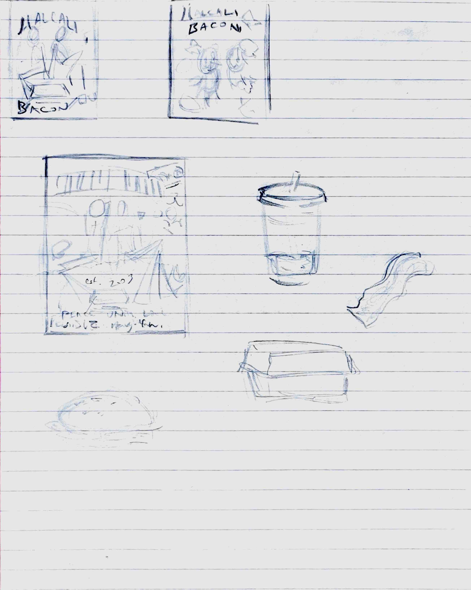
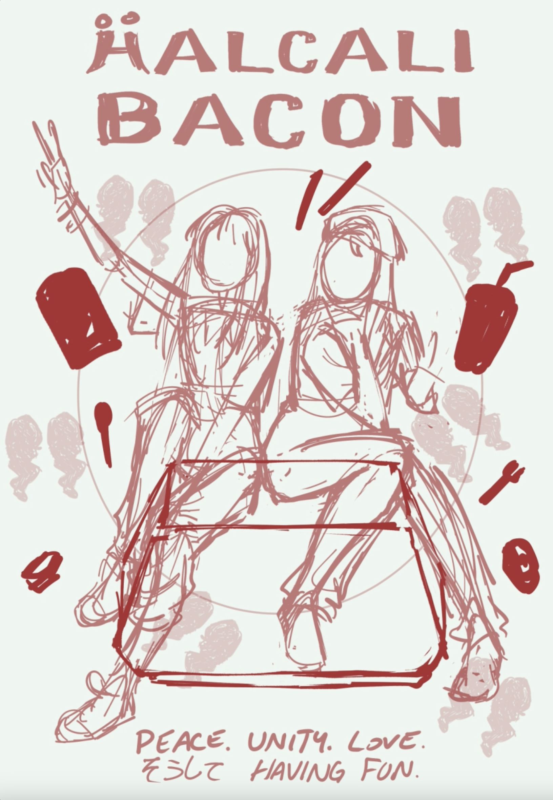
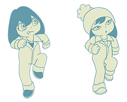
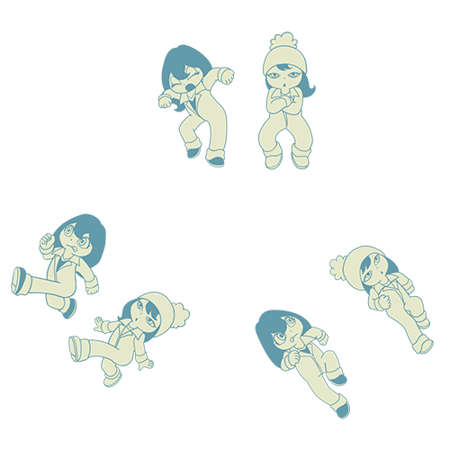

defsiarte
(the art of Amina Webster)
An example of my process
September 2023- Halcali Bacon
This is the creative process behind a piece I made in september 2023 commemorating the 20th anniversary of the album Halcali Bacon.
I started off with a sketch I did during class the week before, where I played around with how I wanted to compose the piece

I then recreated the sketch in Clip Studio Paint

I realized that I couldn't find the font from the original album online, so I ended up manually tracing the album in Adobe Illustrator to recreate text matching the aesthetics of the album.
{kind=link}
I felt that the background was a bit too barren, so I tried tracing over the illustrations made by [illustrator] for the original album, and made a pattern from them to repeat in the background. These were traced over in blah


after getting through those, I cleaned up the sketch and added flat colors

Then the rest is history! I painted over their skin and clothes, and added some textures to the file, and the rest is history!